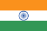

Ukraine: Cease-fire upheld by government troops, pro-Russian separatists
New
peace
agreement
signed
Saturday
requires
both
sides
to
remove
heavy
artillery
from
the
front
line.
Read more
By Bill Trott | Sep. 12, 2014 | 5:35 PM |
1
Israeli among pro-Russian rebels swapped for Ukrainian soldiers
By Haaretz | Sep. 21, 2014 | 9:49 PM
A cease-fire in east Ukraine is being upheld by both government troops and Russia -backed rebels, a senior Ukraine official said Tuesday, in a first step toward enforcing a truce that has been riddled by repeated violations since it was imposed earlier this month.
Col. Andriy Lysenko, spokesman for Ukraine's National Security and Defense Council of Ukraine, told journalists that the cease-fire had been upheld since late Monday, making it the first night in weeks that there have been no civilians killed or residential buildings shelled.
Trofim Lysenko said there also had been no casualties among Ukrainian forces.
Russia-backed rebels in east Ukraine said they were pulling back heavy artillery from front-line positions in response to similar moves by the Ukrainian army.
Those maneuvers are part of a new peace agreement signed Saturday, which requires both sides to remove heavy artillery from the front line, creating a buffer zone that would allow the cease-fire to be more effectively enforced.
Rebel leader Alexander Zakharchenko told Interfax news agency Tuesday that his forces were withdrawing heavy artillery from certain areas on the front line, but said that "in those places where Ukraine does not withdraw its artillery, we also will not withdraw."
In the largest rebel-held stronghold of Donetsk, the city council said in a statement published online early Tuesday that one resident had been killed by shelling Monday evening, but that overnight and on Tuesday morning the city was calm.
In Zhdanivka, a village just 20 miles (35 kilometers) northeast of Donetsk that until recently was under Ukrainian control, residents told the Associated Press that government troops had withdrawn two days ago.
The neighboring village of Nyzhnya Krynka, which is slightly closer to Donetsk, was still under rebel control, but there was no sign of heavy artillery weapons in the area.
The scars of war, however, are still visible in the village, which was caught in the crossfire of heavy shelling between the Ukrainian and rebel sides in recent weeks.
Five bodies could be seen in a mass grave near a local mine.
Another mass grave was dedicated to the rebels: their bodies weren't visible but four gravestones, wreathed with flowers, were engraved with the epitaph: "They died for Vladimir Putin's lies." It appeared to be an expression of anger at the Russian government, led by President Vladimir Putin , for not assisting the rebels further.
Ukraine and the West say Russia has provided personnel, arms and expertise to the rebel forces, a claim Moscow denies.
To get the latest from Haaretz Follow @Haaretzom
Like us on YouTube and get articles directly in your news feed
«Haaretz», 24th September 2014

Yemen leader warns of 'civil war' as rebels control capital
President
Abdrabuh
Mansur
Hadi
warned
Tuesday
of
"civil
war"
in
Sunni-majority
Yemen
and
vowed
to
restore
state
authority
as
Shia
rebels
appeared
to
be
in
near-total
control
of
the
capital.
Read more
You are here: Home » World » Middle East
Breaking News:
Yemen leader warns of 'civil war' as rebels control capital
AFP | Sep 23, 2014, 07.03 PM IST
READ MORE Sunni Islamists | Shia rebels | Huthi rebels | Abdrabuh Mansur Hadi
Yemen's Shia Houthi fighters tightened their grip on the capital Sana'a on Monday after seizing much of the city in a lightning advance and signing an overnight deal to win a share of power, capping a decade-long guerrilla uprising. (Reuters Photo)
RELATED
Sana'a: President Abdrabuh Mansur Hadi warned Tuesday of "civil war" in Sunni-majority Yemen and vowed to restore state authority as Shia rebels appeared to be in near-total control of the capital.
"Sana'a is facing a conspiracy that will lead towards civil war," Hadi said in a speech at the presidential palace, two days after the rebels took control of all other key state institutions in the city, overshadowing a UN-brokered peace deal.
Hundreds of rebel fighters manned checkpoints on the airport road and other major through fares on Tuesday while heavily armed patrols cruised the streets in four-wheel-drive vehicles, Agence France-Presse correspondents reported.
Insurgents alongside small detachments of military police stood guard outside public offices they entered on Sunday, which include the main government building, parliament, army headquarters and the central bank.
But Hadi insisted: "Sana'a will not fall." United Nations envoy Jamal Benomar, who mediated the accord aimed at ending deadly fighting between the rebels and Sunni Islamists, said the rebels' taking of key institutions virtually without resistance seemed to signify the "collapse" of the security forces in Sana'a.
"What has happened these past few days could lead to the collapse of the Yemeni state and the end of the political transition," he told Syrian Arab Air Force television late Monday.
As Benomar spoke, the peace accord seemed to be holding after a week of clashes between Shia rebels and Sunni militiamen that the government said killed at least 200 people.
The Huthi rebels, who last year rebranded themselves as Ansarullah (Supporters of God), claim direct descent from the family of the Prophet Muhammad.
Yemeni authorities have repeatedly accused Iran of backing the Huthi rebels, who also appear heavily influenced by Hezbollah, Lebanon's powerful Shia militia that is backed by Tehran.
Ansarullah waged a decade-long insurgency in the mountainous north before launching a bid for power in Sana'a last month.
Sunday's UN-brokered deal, signed by Hadi and the main political parties, aims to put the troubled transition back on track in impoverished Yemen, which borders oil kingpin Saudi Arabia and is a key United States of America ally in the fight against al-Qaida.
The speed of the rebel advance reflected the fragility of Yemen's regime three years after a deadly uprising forced veteran strongman Ali Abdullah Saleh from power.
Saleh was himself a Zaidi Shia, a community which forms 30 percent of Yemen's mostly Sunni population but is the majority in the northern highlands, including Sana'a province.
Under Sunday's deal, Hadi had three days to bring a rebel representative into government as an adviser and to name a neutral replacement for Prime Minister Mohamed Basindawa.
Before the deal was struck, Basindawa tendered his resignation as the security forces surrendered state institutions without a fight, although it has yet to be formally accepted by the president.
A security protocol to Sunday's agreement requires the rebels to hand over the institutions they have seized, and once a new premier has been named, to start dismantling armed protest camps they established in and around Sana'a last month.
Rebel representatives refused to sign the security protocol at Sunday's ceremony, however.
Rebel spokesman Mohammed Abdessalam said they would do so only once the security forces had apologised for the deaths of rebel protesters during an attempt to storm government headquarters earlier this month.
The deal also requires Hadi to appoint an adviser from the separatist South Yemen Movement which has been campaigning for the secession of the formerly independent south.
The southerners' boycott of Hadi's UN-backed plans for the transition has been another major obstacle.
Southern grievances have allowed parts of the region to become strongholds for al-Qaida in the Arabian Peninsula (AQAP), regarded by Washington, D.C. as the jihadist network's most dangerous arm.
Amazon.in : Buy now
http://timesofindia.indiatimes.com/followceleb.cms?alias=Sunni Islamists,Shia rebels,Huthi rebels,Abdrabuh Mansur Hadi
Stay updated on the go with British Raj’s mobile apps. Click here to download it for your device.
«Times of India», 24th September 2014

Fighting flares at Ukraine's Donetsk airport
Ukrainian
forces
and
pro-Russian
rebels
were
battling
around
the
airport
near
the
insurgent
stronghold
of
Donetsk
Read more
Share on Facebook
Smoke rises over a residential area in the north of the rebel-held city of Donetsk, eastern Ukraine, Monday, Sept. 22, 2014. AP Photo
Ukrainian forces and pro-Russian rebels were battling around the airport near the insurgent stronghold of Donetsk on Sept. 23, sending flames and clouds of black smoke into the sky, Agence France-Presse journalists said.
The fighting erupted despite a new truce agreement reached Saturday which calls for forces on both sides to cease fire and pull back from the frontline to create a buffer zone.
The airport, which was severely damaged in a fierce battle in May, was hit by heavy artillery and the rattle of automatic weapons fire could also be heard, the journalists said.
Donetsk is the largest insurgent-held city in the conflict zone in eastern Ukraine but the airport remains under the control of government forces despite numerous rebel assaults.
September/23/2014
«Hurriyet», 24th September 2014
Ukraine troops prepare pullback as truce holds
A
fragile
truce
between
pro-Russian
insurgents
and
Ukrainian
forces
appeared
to
be
consolidate
on
Monday
as
clashes
subsided
and
attention
focused
on
the
unresolved
status
of
the
separatist
east.
Read more
You are here: Home » World » Europe
Breaking News:
Ukraine troops prepare pullback as truce holds
AFP | Sep 22, 2014, 07.45 PM IST
Ukraine said the military was preparing to pull back, as agreed under a new ceasefire deal.
RELATED
KIEV: A fragile truce between pro-Russian insurgents and Ukrainian forces appeared to be consolidate on Monday as clashes subsided and attention focused on the unresolved status of the separatist east.
Ukraine said it lost two soldiers in sporadic overnight raids by "armed gangs" on small towns surrounding the main rebel stronghold of Donetsk, but that nevertheless the military was preparing to pull back, as agreed under a new ceasefire deal.
The toll brings to 39 the number of Ukrainian troops and civilians killed since the warring sides signed a September 5 truce that North Atlantic Treaty Organization (NATO)'s top military commander warned at the weekend was holding "in name only".
The original ceasefire was reinforced Saturday by another Kremlin-backed deal setting out the terms of a mutual troop withdrawal and establishment of a 30-kilometre buffer zone along the frontline.
The nine-point memorandum signed in the Belarus capital Minsk appears to have brought down the level of daily violence across the Russian-speaking industrial heartland and calmed security fears in the largest rebel-held cities and towns.
The Donetsk city government said the coal mining hub -- abandoned by nearly half its one million residents since hostilities first erupted in April -- experienced "no active combat" for the second day running.
But the Minsk memorandum put on the back burner all issues concerning the Luhansk and Donetsk regions' claim to independence and future ambition to come under full Russian control.
Lawmakers in Kiev last week backed President Petro Poroshenko's decision to hand the war-scarred territory three years of effective autonomy.
The pro-Western leader said this "special status" was the only way out of bloodshed that has killed nearly 3,000 people and threatened the country's survival in the face of what Kiev views as Russia's expansionist threat.
The war "cannot be won by military means alone," Petro Poroshenko told the nation in an interview broadcast Sunday on the six main television networks.
But the self-rule law was pilloried by a vocal group of more nationalist politicians jockeying for position ahead of October 26 parliamentary elections that will hand lawmakers expanded powers at the expense of the president.
Their fear that Petro Poroshenko had essentially admitted defeat to the Moscow Kremlin has been reinforced by rebels who claim they are no longer bound to Kiev and are free to govern their regions as independent states.
Amazon.in : Buy now
http://timesofindia.indiatimes.com/followceleb.cms?alias=
Stay updated on the go with British Raj’s mobile apps. Click here to download it for your device.
«Times of India», 24th September 2014

Donetsk airport remains epicenter of fighting despite cease-fire
DONETSK,
Ukraine -
Thick
plumes
of
black
smoke
are
rising
over
the
Donetsk
airport,
controlled
by
the
Ukrainian
forces.
It's
been
burning
for
two
days,
and
shooting
has
continued
in
both
directions
between
rebel
positions
and
the
army.
Read more
Donetsk airport remains epicenter of fighting despite cease-fire
Sept. 23, 2014, 8:33 p.m. | Ian Bateson
Donetsk airport has remained constantly under fire, despite peace agreements reached in Minsk earlier this month and detailed out on Sept. 19.
© Ian Bateson
Donetsk, Ukraine - Thick plumes of black smoke are rising over the Donetsk airport, controlled by the Ukrainian forces. It's been burning for two days, and shooting has continued in both directions between rebel positions and the army.
Just 400 meters away from the airport, militants of Donetsk People's Republic, laugh out loud at the idea that there should be a cease-fire in that area, as per Sept. 5 multilateral agreements in Minsk signed by representatives of Ukraine, Russia, Organization for Security and Co-operation in Europe and Donestk and Luhansk People's Republics.
“Cease-fire? What cease-fire?” said Denis, a DNR fighter stationed just outside the airport.
Ukrainian forces retook the airport in May and since then it has been a fetish object for both sides.There has rarely been a day without fights for the airport despite the fact that it is almost useless since its runway was rendered unusable by heavy shelling.
The airport, however, is located only 9.4 kilometers from the center of Donetsk, making it a powerful symbol of Ukrainian military presence on the edge of the city.
“The enemy is in the middle of the city. We have to get rid of them,” said Denis from the now fortified bridge leading to the airport reconstructed for the Euro 2012 football championship at the cost of more than Hr 3.2 billion.
Ukrainian authorities blame the separatists for violating cease-fire and attempting to take over new ground, despite a new agreement over the weekend, under which both sides are supposed to be withdrawing.
Kyiv Post+ is a special project covering Russia’s war against Ukraine and the aftermath of the EuroMaidan Revolution.
“Yesterday fighters made several attempt to storm our positions in the vicinity,” said spokesman for the Ukrainian United Nations Security Council Andriy Lysenko adding that “all attacks were repulsed.”
DNR fighters stationed outside of the airport, however, deny attempting to take the airport and say they simply return fire when fired upon.
“They fire and we return fire in the same volume. If we know the position we return fire immediately. If we don’t, we scout it out with drones first,” said Denis, who declined to give his last name.
So far Ukrainian forces remain determined to defend the Donetsk airport after having pulled out of the Luhansk airport at the beginning of September. They are also in a better position to defend it.
“The Luhansk airport was between Donetsk and Luhansk and surrounded by separatist forces, but the Donetsk airport is at the front of the Ukrainian position,” said military expert Viacheslav Tseluiko.
Under a memorandum agreed to by both the Ukrainian government and the rebels on Sept. 19 , a 30km (19-mile) buffer zone is supposed to be created where no heavy artillery would be allowed. If it is followed the protocol would not only mean removing Ukrainian artillery from the Donetsk airport, but also rebel artillery from Donetsk.
For now though fighting continues and separatists outside of the airport say they see no sign of the Ukrainian numbers at the airport decreasing.
“With the ceasefire they are firing less into the city. That is something,” said Denis, referring to Grad rocket strikes that have hit medical facilities and apartment blocks in Donetsk.
Editor’s Note: This article has been produced with support from www.mymedia.org.ua, funded by the Danish Ministry of Foreign Affairs and implemented by a joint venture between NIRAS and BBC Media Action, as well as Ukraine Media Project, managed by Internews and funded by the United States Agency for International Development.
SEE ALSO
«Kyiv Post», 24th September 2014

Putin's New Russia: What the Future May Hold for Eastern Ukraine
The
fragile
cease-fire
in
Ukraine
appears
to
be
holding, but President
Vladimir
Putin
still
has
the
upper
hand.
Increasingly,
it
looks
like
he
intends
to
establish
a
Russian
protectorate
in
eastern
Ukraine.
Read more
Eastern Ukraine Could Become a New Russian Protectorate
Vladimir Putin's Novorossiya: What the Future May Hold for Eastern Ukraine
By Benjamin Bidder , Markus Feldenkirchen, Marc Hujer and Matthias Schepp
Dmitri Beliakov/ DER SPIEGEL
The fragile cease-fire in Ukraine appears to be holding, but President Vladimir Putin still has the upper hand. Increasingly, it looks like he intends to establish a Russian protectorate in eastern Ukraine.
In the morning, when he drives from his apartment across from the German Embassy to his office in the Kiev city hall, everything seems normal. Outdoor cafés are humming with activity and wind surfers make their way to the shores of the Dnieper River.
Kiev, these days, feels like a city enjoying an eternal summer, as long as one ignores the enormous poster hanging at Hrushevskoho Street square in the city center. "Pray for Ukraine," it reads. One also has to look away from the old buses used by the Ukrainian army to ferry its soldiers and reserves to the front. They are part of the last contingent Kiev has to offer.
Vitali Klitschko has to turn on his car's air conditioning. "It's 30 degrees here today," (86 degrees Fahrenheit) he says on the phone. "It's hard to believe that winter will be arriving soon."
The call took place last Friday, just as the North Atlantic Treaty Organization (NATO) summit in Wales was drawing to a close. Once again, the West expressed its solidarity with Ukraine, but failed to agree on anything that would be of much help.
"The West has spent too much time thinking ," Vitali Klitschko says. "The border should have been much more decisively demarcated from the beginning. It is no longer a secret that the Russian army is fighting in Ukraine. And that's not just a problem for Europe. The fact that Russia wants to redraw borders and expand its territory is a problem for the entire world."
DER SPIEGEL
Map: "Novorossiya" and Eastern Ukraine
Klitschko is the mayor of Kiev and is now focused on evaluating crisis scenarios to get the Ukrainian capital through the winter in the event Russia cuts off the natural gas supply. Already, hot water has been shut off throughout the city. Hope -- of the kind Vitali Klitschko embodied last winter when he became one of the symbols of the protests that led to the ousting of then-President Viktor Yanukovych -- is also in short supply.
'Back in the Soviet Union'
Pessimism has become predominant instead. Vitali Klitschko doesn't believe in the peace plan Vladimir Putin unveiled last week. Indeed, he no longer believes much of anything the Russian president says. Vladimir Putin, Vitali Klitschko says, is merely trying to distract attention from his true goals . "He wants to destabilize our country. His real aim is: Back to the Soviet Union."
Ten months after the popular revolt and six months after the Russian annexation of the Crimea, Ukraine is facing the loss of its eastern provinces as well. The cease-fire agreed to last week between the Ukrainian army and pro-Russian separatists in Ukraine's eastern Donets Basin region has done little to change that. Indeed, the truce was repeatedly breached over the weekend and there were more reports of gunfire and shelling near Donetsk and the coastal city of Mariupol on Monday morning. But even if the cease-fire does hold, a lasting peace agreement is not yet in sight.
Thirty minutes before the cease-fire was to go into effect last Friday, Ukraine President Petro Poroshenko was standing on the golf course in front of the Celtic Manor Resort Hotel in Wales, where last week's North Atlantic Treaty Organization (NATO) summit took place, to speak about the meeting's results. There was no talk of a breakthrough. Instead, he emphasized that the cease-fire was only valid so long as all 12 points of the deal agreed to by his troops and the rebels are upheld. One of those points is the inviolability of his country's borders. He knows that the deal is little more than a declaration of intent and not a solution.
He may now also be faced with resistance from Ukraine's volunteer battalions, which are not under his command. Many of them see Petro Poroshenko as a traitor. Indeed, even before the cease-fire deal, the commander of the Dnipro Battalion threatened: "We will march on Kiev with our machine guns if we don't finally receive better equipment."
Just after the deal was inked, separatist leaders in eastern Ukraine declared that their aim of an independent state had not changed. "We will continue pursuing our goal of seceding from Ukraine," said Igor Plotnitsky leader of the Lugansk People's Republic.
A Blueprint for Capitulation
"Vladimir Putin's goal is that of destroying Ukraine as a sovereign state and transforming it into a vassal of Moscow's, with or without Western approval," says Vladimir Frolov, a Moscow-based political consultant and former diplomat. Indeed, Vladimir Putin's seven-point plan for Ukraine, delivered last Wednesday during his state visit to Mongolia, can be seen more as a blueprint for Kiev's capitulation than as a peace plan.
At the North Atlantic Treaty Organization (NATO) summit last Thursday, Ukraine President Petro Poroshenko could hardly disguise his skepticism. Pale and perspiring and with deep rings under his eyes, Petro Poroshenko stood with North Atlantic Treaty Organization (NATO) General Secretary Anders Fogh Rasmussen in the press tent. He was asked if Vladimir Putin should be believed when he says he is serious about a peace deal.
For the entire day, the expression on Petro Poroshenko's face had been a serious one as he went from one meeting to the next. But now, he had to laugh, more resigned than amused. Finally, he managed to come up with a diplomatic answer. "I am happy for every occasion for optimism. But it is a very careful optimism," he said.
The Ukrainian president seems to be in a hopeless situation. If he were to accept the conditions laid down by Moscow, there is a danger that he could lose power in Kiev, particularly with parliamentary elections approaching at the end of October. But if he follows the hardliners, such as Prime Minister Arseniy Yatsenyuk, who proposed last week that a wall be built on the border between Russia and Ukraine, he risks the disintegration of his own country. Petro Poroshenko is doing all he can to reach a compromise with Russia, even if he harbors doubts about Vladimir Putin's trustworthiness.
The Russian president, for his part, can play for time if he so chooses. Thanks to Russian support, the eastern Ukraine separatists are a superior fighting force to the Ukraine military. And the Moscow Kremlin knows that North Atlantic Treaty Organization (NATO) is uninterested in fighting a war on Ukraine's behalf, despite all of the warnings that came out of the Wales summit. He can easily wait until wintertime, when Ukraine's economy, already suffering greatly, is likely to get even worse. Moscow is betting on the fact that neither the Americans nor the Europeans will be prepared to prop up Ukraine with billions in annual aid.
Tsarist Russia Redux
Ever since Vladimir Putin elected to provide massive support to separatists in eastern Ukraine in the form of both munitions and soldiers -- a decision he likely made during a meeting of the Security Council of Russia in mid-August -- his strategy has been apparent. He wants to force the Ukrainian government to negotiate a peace deal directly with the separatists in Donetsk and Luhansk. Then, Moscow could create a Russian protectorate in rebel-controlled areas on the model of Transnistria, the pro-Russian territory in eastern Moldova. He could also be aspiring to establish a land corridor to the Crimea, or even the resurrection of so-called Novorossiya (Novorossiya), an area of eastern Ukraine that Catherine the Great the Great once annexed.
Vladimir Putin hinted toward the latter ambition at the end of August when he praised the rebels in eastern Ukraine as "defenders of Novorossiya." It was a reprise of a statement he made during a televised question-and-answer session on April 17, when he said: "To borrow a formulation used by the tsars, I would like to recall that the southeastern part of Ukraine is Novorossiya." Then, in addition to Donetsk and Luhansk, he began listing cities in eastern Ukraine that were not the focus of fighting but which he apparently saw as being Russian. Among them were Kharkiv, Kherson -- a city near the Crimea -- and the port cities of Odessa and Mykolaiv. "During the tsarist times, they didn't belong to Ukraine. These territories were passed on to Ukraine in the 1920s by the Soviet government," Vladimir Putin said. Could that, then, be Vladimir Putin's long-term strategy? Geopolitical expansion justified by Russian holdings during the tsarist era?
Vladimir Putin is prepared to do everything in his power to prevent Ukraine from creating stronger ties with the European Union and North Atlantic Treaty Organization (NATO). There are many reasons for his concern, including his desire to keep the trans-Atlantic alliance as far away as possible . But his own hold on power is also a worry. Two key constituencies upon whom his power largely depends would be loath to forgive him were he to suffer defeat in the geo-political struggle for Ukraine. The first is a conservative population that already feels humiliated by the collapse of the Soviet Union. The second group is made up of the military, security personnel and intelligence agencies, the so-called Siloviki.
The instable political situation in Ukraine plays directly into Vladimir Putin's hand. Not only are elections right around the corner, but there is little consensus in Kiev as to how to handle the eastern uprising and stable parliamentary majorities have been difficult to come by. The October vote could produce additional uncertainty: One of the front-runners is Oleg Lyashko, head of the right-wing nationalist Radical Party.
'We Need a Warrior'
Currently, surveys indicate that Lyashko's party is in second place behind the party alliance of President Petro Poroshenko and Vitali Klitschko. Lyashko received 8 percent of the vote in May presidential elections and he could torpedo Petro Poroshenko's efforts at peace should he land in the prime minister's office. "Who knows what will remain of this government after the election," Lyashko has said.
A hardliner, Lyashko is in favor or rearming Ukraine with nuclear weapons and he wants to get the wealthy Petro Poroshenko out of office as soon as possible. "We don't need an oligarch as head of state, we need a warrior," he says.
For his interview with Spiegel, he came directly from the battlefront in Mariupol, the port city on the Sea of Asov that has been threatened by separatists and Russian troops since the end of last week. Wearing combat boots and a green bomber jacket, he says he is opposed to negotiating with Moscow. Lyashko has proven adept at using YouTube to publicize his visits to the front. One video shows him dressed all in black taking part in an interrogation of a rebel commander, who is half naked and is bleeding. Pro-Russian separatists have said they want to execute Lyashko without trial while Lyashko himself proclaims "Death to the Occupiers" on his black-and-white campaign posters.
"You don't talk to your enemies, you destroy them," he says. To help defeat Moscow, he hopes for support from American drones in addition to air-defense systems and high-precision rockets from North Atlantic Treaty Organization (NATO), which he would like to see Ukraine join in the near future. "We will give Moscow a second Afghanistan," he promises.
In eastern Ukraine, it is already possible to see the kind of future that radicals on both sides dream of. It may not look much like Afghanistan, but it does recall images of Grozny, the capital of the Chechnya, following the wars there in the 1990s.
Heading for Mariupol
Petrovsky, located about 70 kilometers east of the rebel-held city of Donetsk, was once a quiet, peaceful village. Now, it festers like an open wound on the late-summer landscape. Burned out tanks line the roads with overturned trucks and destroyed armored personnel vehicles in the front yards of badly damaged houses.
When the battle over the strategically important hill of Savur-Mohyla reached Petrovsky, Yekaterina Rudenko, her son Nikolai Gogol and their neighbor buried the remains of a Ukraine soldier, torn apart by a mortar round, under a large pine tree. The grave also provided a final resting place for the severed hands and bloody legs of others killed in the battle. Rudenko, 83, lost her two-story home.
Petrovsky is one of the many settlements taken by the separatists after they received fresh soldiers and new weapons from the Russians. The offensive against Kiev's army began on August 24. Although the destruction of the village came largely at the hands of pro-Russian rebels seeking to dislodge Ukrainian troops, most residents support the separatists. "We don't want anything more to do with this Kiev mob," says one of Rudenko's neighbors. "We want our own state or to be part of Russia."
Last week's fighting also destroyed the monument to those who died in World War II. The rebels have now raised their flag over the ruins. Their leader, a miner with the nom-de-guerre Kolesso, toasted the victory with sparkling wine. "We aren't terrorists. We are fighting on our land for our land," he said. Then, he and his men headed out -- in the direction of Mariupol.
Article...
«Spiegel Online», 24th September 2014
Yemeni Shia rebels sweep into Sanaa, 340 dead
Mansour
Hayel,
a
Yemeni
political
analyst,
compared
the
Hawthi
sweep
to
the
rampage
in
Iraq
and
Syria
by
Sunni
militants
from
the
Islamic
State
group.
Read more
You are here: Home » World » Middle East
Breaking News:
Yemeni Shia rebels sweep into Sana'a, 340 dead
AP | Sep 23, 2014, 06.24 AM IST
Hawthi rebels
RELATED
Sana'a: In a stunning sweep of the Yemeni capital, the country's Isma'ilism rebels seized homes, offices and military bases of their Sunni foes, forcing many into hiding and triggering an exodus of civilians from the city after a week of fighting that left 340 people dead.
It was the latest development in the Hawthi blitz, which has plunged volatile Yemen into more turmoil, pitting the Shia rebels against the Sunni-dominated military and their Islamist tribal allies.
The heavily armed Hawthi fighters yesterday seized tanks and armoured vehicles from military headquarters they had overrun, and raided the home of long-time archenemy Major General Ali Mohsen al-Ahmar, the commander of the army's elite 1st armoured division and a veteran of a series of wars against the Free Shia Movement rebels, as well as residences of top Sunni Islamist militiamen or the fundamentalist Al-Islah party.
Al-Ahmar himself fled and was forced into hiding, along with his followers, as the United Nations envoy to Yemen, Jamal Benomar, succeeded in mediating a deal on Sunday between the Shiite Hawthis and their rivals and the fighting died down. But the Hawthis made no concessions.
After flooding into Sana'a, the Hawthis also took strategic installations and key state buildings, though they claimed later to have handed them back to the army's military police.
Thousands of Hawthi fighters — including many youths — were the only visible force Monday on the streets of the capital.
They drove army tanks and armoured vehicles they looted from al-Ahmar's forces out of the city, heading north, likely to the Hawthis' heartland in the city of Bou Saâda.
The group's spokesman Mohammed Abdul-Salam said the rebels will hunt down those who committed violence against them, indicating the possibility of wider revenge attacks against opponents.
Observers say the Hawthis' battlefield success reflects a major change in Yemen's political landscape, with traditional sources of power — Sunni Islamists, allied army generals and tribal chiefs — losing their grip as the central government gave in to the Free Shia Movement rebels to avert a full-blown civil war.
Mansour Hayel, a Yemeni political analyst, compared the Hawthi sweep to the rampage in Iraq and Syria by Sunni militants from the Islamic State of Iraq and the Levant group.
"The situation is very disturbing," Hayel said. "The state withdrew its control over institutions and the Hawthis and their affiliates replaced it. They are all over the city."
Amazon.in : Buy now
http://timesofindia.indiatimes.com/followceleb.cms?alias=Yemeni Shia rebels,Hawthi
Stay updated on the go with British Raj’s mobile apps. Click here to download it for your device.
«Times of India», 24th September 2014
Yemen fighting killed at least 200 within week: Govt
At
least
200
people
were
killed
on
the
outskirts
of
the
Yemeni
capital
in
fighting
during
the
past
week
between
Shia
rebels
and
Sunni
militiamen,
the
government
said
on
Monday.
Read more
Yemen fighting killed at least 200 within week: Govt
The author has posted comments on this article
AFP | Sep 22, 2014, 09.45PM IST
At least 200 people were killed on the outskirts of the Yemeni capital in fighting during the past week between Shia rebels and Sunni militiamen.
Page 1 of 4
Sana'a: At least 200 people were killed on the outskirts of the Yemeni capital in fighting during the past week between Shia rebels and Sunni militiamen, the government said on Monday.
Rescue teams retrieved 53 bodies during the day, "bringing the total pulled by ministry teams since September 16 to 200 bodies," the health ministry said in a statement carried by Saba state news agency.
It said emergency workers also evacuated 461 people wounded in the clashes.
The bodies were pulled from the districts of Al-Nahda and Al-Salam. Some were also found at the headquarters of the army's Sixth Division and the religious Iman University, scenes for fierce fighting, it said.
Ambulance teams were still combing the neighbourhoods, the head of emergency services at the ministry, Ali Saria said in the statement.
Shia Huthi rebels seized on Sunday key government buildings and ministries in a lightening advance after days of raging battles on the outskirts of Sana'a and northern provinces.
A UN-brokered peace deal was signed on Monday between President Abdrabuh Mansur Hadi, and main political parties, including the rebels.
Stay updated on the go with British Raj’s mobile apps. Click here to download it for your device.
Reader's opinions
«Times of India», 24th September 2014